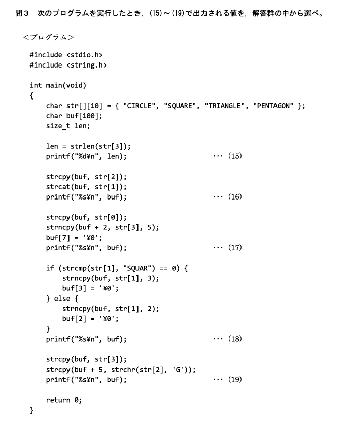
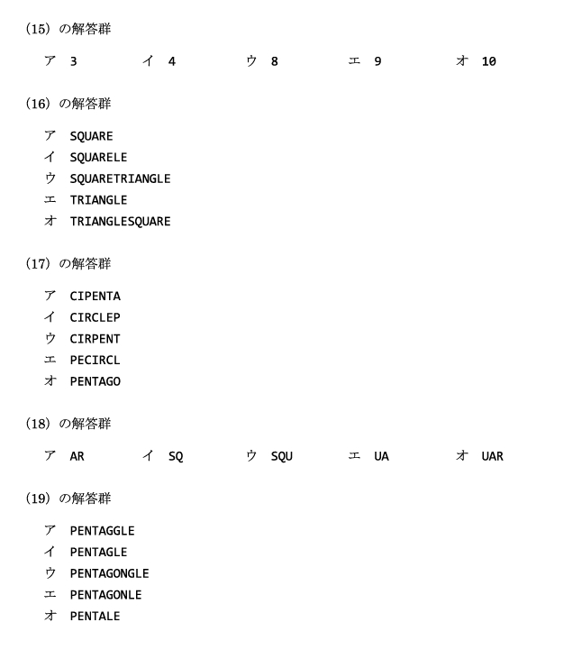
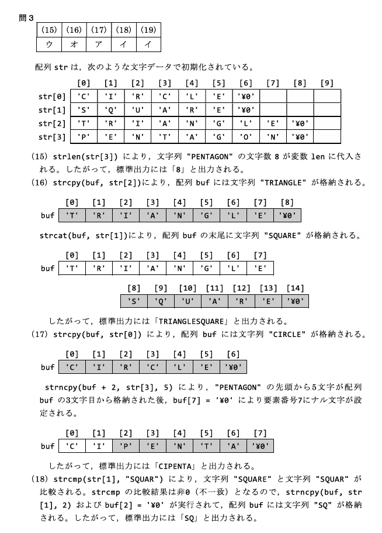
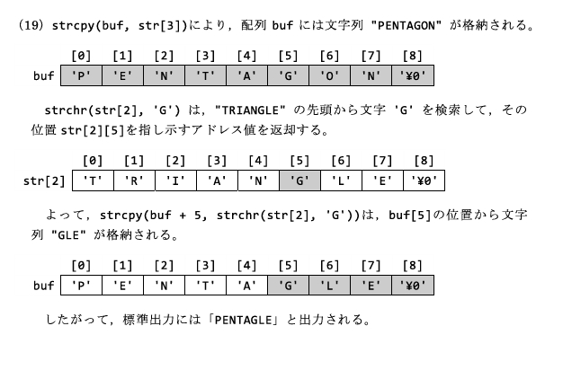

C言語には「文字列型」が存在しない。文字列は char 型の配列として扱われ、必ず末尾に終端文字 '¥0'（ヌル文字）が付く。2級ではこの仕組みと string.h の関数、メモリ上の並びが問われる。
'¥0' を説明できる ② strlen/strcpy/strncpy/strcmp の動作と戻り値が分かる ③ 文字列の配列 char s[][N] の各要素にアクセスできる。
配列は、同じ型のデータを連続したメモリ領域に並べて格納するデータ構造である。
int arr[5]; /* 整数型を5要素ぶん確保 */
char str[10]; /* 文字型を10要素ぶん確保 */宣言と同時に初期値を与えることもできる。
int num[10] = {1,2,3,4,5,6,7,8,9,0}; /* 各要素に値を格納 */
int num[] = {1,2,3,4,5,6,7,8,9,0}; /* 要素数は初期化式から決まる（=10） */文字列は char 配列として宣言する。文字列リテラルで初期化すると、末尾に終端文字 '¥0' が自動的に付く。
char str[6] = "Hello"; /* H e l l o ¥0 の6文字ぶん */
char str[] = "Hello"; /* 要素数は初期化式から決まる（=6） */宣言 char str[6] = "Hello"; はメモリ上に次のように並ぶ。
'¥0'（5文字 ＋ 終端で 6 バイト）'¥0'）。strlen や strcpy などの文字列関数は '¥0' を見つけるまで処理を続ける。'¥0' が無いと、メモリの不正アクセス（暴走）が起こりうる。
文字列を操作するには標準ライブラリ <string.h> を使う。
| 関数 | 機能 | 使用例 |
|---|---|---|
strlen | 文字列の長さを返す（'¥0' は数えない） | size_t len = strlen(str); |
strcpy | 文字列をコピー | strcpy(dest, src); |
strcat | 文字列を末尾に連結 | strcat(dest, src); |
strcmp | 2つの文字列を比較（等しいと 0） | int c = strcmp(s1, s2); |
strncpy | 最大 n 文字だけコピー | strncpy(dest, src, n); |
strchr | 指定文字が最初に現れる位置（アドレス）を返す | char *p = strchr(str, 'e'); |
strcmp の戻り値は「等しい→0／s1が大きい→正／s1が小さい→負」。「等しいと0」がよく問われる（0以外＝違う、と覚える）。
複数の文字列をまとめて持つには、文字列の配列（2次元 char 配列）を使う。
char str[][10] = { "Hello", "World", "C" };str は3つの文字列を保持する。'¥0' を含む）。printf("%s¥n", str[0]); /* "Hello" を表示（str[0] は文字列の先頭アドレス） */
printf("%s¥n", str[1]); /* "World" を表示 */
printf("%s¥n", str[2]); /* "C" を表示 */
printf("%c¥n", str[0][1]); /* 'e' を表示（str[0] の1番目の "1文字"） */
printf("%c¥n", str[1][2]); /* 'r' を表示 */str[0][1] は 1文字（char の 'e'）であって文字列ではない。printf("%s", str[0][1]) のように %s に1文字を渡すと暴走する（未定義動作）。e から後ろ（"ello"）」を文字列として表示したいなら、アドレスを渡す：printf("%s¥n", str[0] + 1); または printf("%s¥n", &str[0][1]); → "ello"
strncpy(コピー先, コピー元, 文字数)。コピー先・コピー元はアドレスなので、dest + 2 のように「途中の位置」から始められる。
#include <stdio.h>
#include <string.h>
int main(void)
{
char src[] = "Hello, World!";
char dest[20] = "XXXXXXXXXXXXXXX"; /* X が15個 */
strncpy(dest + 2, src, 5); /* dest の index 2 から "Hello" を5文字コピー */
dest[7] = '¥0'; /* 終端文字を手動で付ける */
printf("Result: %s¥n", dest);
return 0;
}%s は先頭から '¥0' まで表示するので、実行結果は：
Result: XXHello



char 配列。末尾に終端文字 '¥0' が必要。'¥0' のぶん）。strlen は '¥0' を数えない。<string.h>。strcmp は等しいと 0。char s[][N]。s[i] は文字列、s[i][j] は1文字。Q1. strlen("Hello") の戻り値はどれか。
正解：イ（5）
strlen は終端文字 '¥0' を数えない。"Hello" は5文字なので 5。なお char s[]="Hello"; の 配列サイズ（sizeof）は '¥0' を含めて 6 になる点と区別すること。
Q2. char str[6] = "Hello"; で確保される配列のバイト数はどれか。
正解：ウ（6）
5文字 ＋ 終端文字 '¥0' ＝ 6バイト。
Q3. 2つの文字列が等しいとき、strcmp(s1, s2) が返す値はどれか。
正解：ア（0）
strcmp は等しいと 0、s1 が大きいと正、s1 が小さいと負を返す。「等しい＝0」「0以外＝違う」と覚える。
Q4. char s[][10] = {"Hello","World","C"}; のとき、s[1][2] が表すものはどれか。
正解：ウ（'r'）
s[1] は2番目の文字列 "World"。その [2] は3文字目（index 2）なので 'r'（1文字）。文字列 "rld" として扱いたいなら s[1] + 2 のようにアドレスを渡す。
Q5. 次のコードの実行結果はどれか。
char src[] = "Hello, World!";
char dest[20] = "XXXXXXXXXXXXXXX";
strncpy(dest + 2, src, 5);
dest[7] = '¥0';
printf("%s¥n", dest);正解：エ（XXHello）
dest の先頭2文字 "XX" はそのまま、index 2 から "Hello" を5文字コピーし、index 7 に '¥0' を置く。%s は先頭から '¥0' まで表示するので "XXHello"。
Q6. 文字列の「終わり」を示すものはどれか。
正解：イ（'¥0'）
紛らわしい3つを区別：'¥0'（ヌル文字）＝文字列の終わり ／ EOF＝ファイル（入力）の終わり ／ NULL＝どこも指さないポインタ。